Body Electrical System
General Troubleshooting Information
Before Troubleshooting
1. Check applicable fuses in the appropriate fuse/relay box.
2. Check the battery for damage, state of charge, and clean and tight connections.
NOTE:
- Do not quick-charge a battery unless the battery ground cable has been disconnected, otherwise you will damage the alternator diodes.
- Do not attempt to crank the engine with the battery ground cable loosely connected or you will severely damage the wiring.
3. Check the alternator belt tension.
Handling Connectors
1. Make sure the connectors are clean and have no loose wire terminals.
2. Make sure multiple cavity connectors are packed with grease (except watertight connectors).
3. All connectors have push-down release type locks (A).
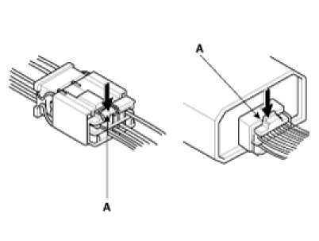
4. Some connectors have a clip on their side used to attach them to a mount bracket on the body or on another component. This clip has a pull type lock.
5. Some mounted connectors cannot be disconnected unless you first release the lock and remove the connector from its mount bracket (A).
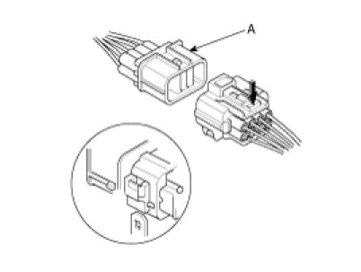
6. Never try to disconnect connectors by pulling on their wires; pull on the connector halves instead.
7. Always reinstall plastic covers.
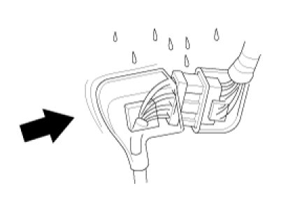
8. Before connecting connectors, make sure the terminals (A) are in place and not bent.
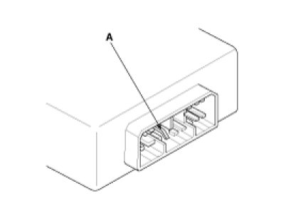
9. Check for loose retainer (A) and rubber seals (B).
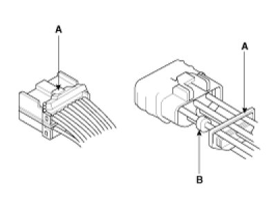
10. The backs of some connectors are packed with grease. Add grease if necessary. If the grease (A) is contaminated, replace it.
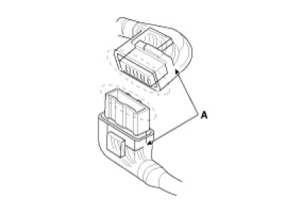
11. Insert the connector all the way and make sure it is securely locked.
12. Position wires so that the open end of the cover faces down.
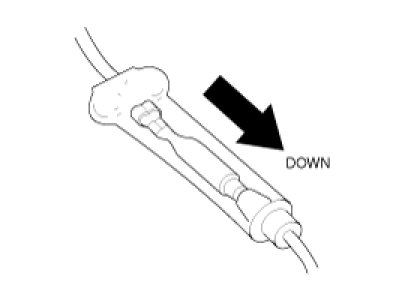
Handling Wires And Harnesses
1. Secure wires and wire harnesses to the frame with their respective wire ties at the designated locations.
2. Remove clips carefully; don't damage their locks (A).
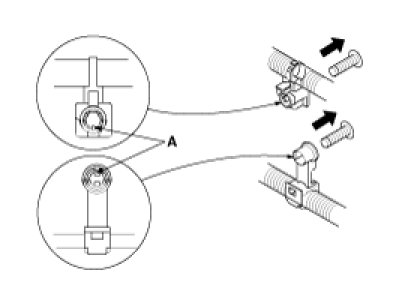
3. Slip pliers (A) under the clip base and through the hole at an angle, and then squeeze the expansion tabs to release the clip.
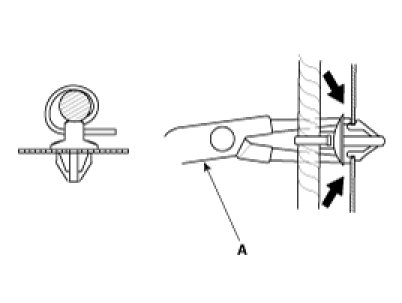
4. After installing harness clips, make sure the harness doesn't interfere with any moving parts.
5. Keep wire harnesses away from exhaust pipes and other hot parts, from sharp edges of brackets and holes, and from exposed screws and bolts.
6. Seat grommets in their grooves properly (A). Do not leave grommets distorted (B).
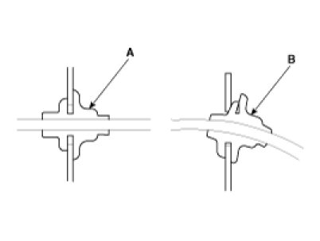
Testing And Repairs
1. Do not use wires or harnesses with broken insulation.
Replace them or repair them by wrapping the break with electrical tape.
2. After installing parts, make sure that no wires are pinched under them.
3. When using electrical test equipment, follow the manufacturer's instructions and those described in this manual.
4. If possible, insert the remover tool from the wire side (except waterproof connector).
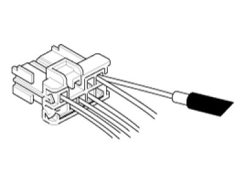
5. Use a remover tool with a tapered tip.
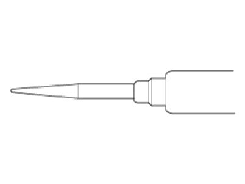
Refer to the user's guide in the wiring repair kit II (Pub. No. : 0K000 003 A05)
Five-step Troubleshooting
1. Verify the complaint
Turn on all the components in the problem circuit to verify the customer complaint. Note the symptoms. Do not begin disassembly or testing until you have narrowed down the problem area.
2. Analyze the schematic
Look up the schematic for the problem circuit.
Determine how the circuit is supposed to work by tracing the current paths from the power feed through the circuit components to ground. If several circuits fail at the same time, the fuse or ground is a likely cause.
Based on the symptoms and your understanding of the circuit operation, identify one or more possible causes of the problem.
3. Isolate the problem by testing the circuit.
Make circuit tests to check the diagnosis you made in step 2. Keep in mind that a logical, simple procedure is the key to efficient troubleshooting.
Test for the most likely cause of failure first. Try to make tests at points that are easily accessible.
4. Fix the problem
Once the specific problem is identified, make the repair. Be sure to use proper tools and safe procedures.
5. Make sure the circuit works
Turn on all components in the repaired circuit in all modes to make sure you've fixed the entire problem. If the problem was a blown fuse, be sure to test all of the circuits on the fuse. Make sure no new problems turn up and the original problem does not recur.
Battery Reset
Description
When reconnecting the battery cable after disconnecting, recharging battery after discharged or installing the memory fuse located on the driver's side panel after removing, be sure to reset systems mentioned in the below table.
In addition, when replacing or reinstalling their fuses after removing, they should be reset according to the below table. Please refer to the below table when servicing.
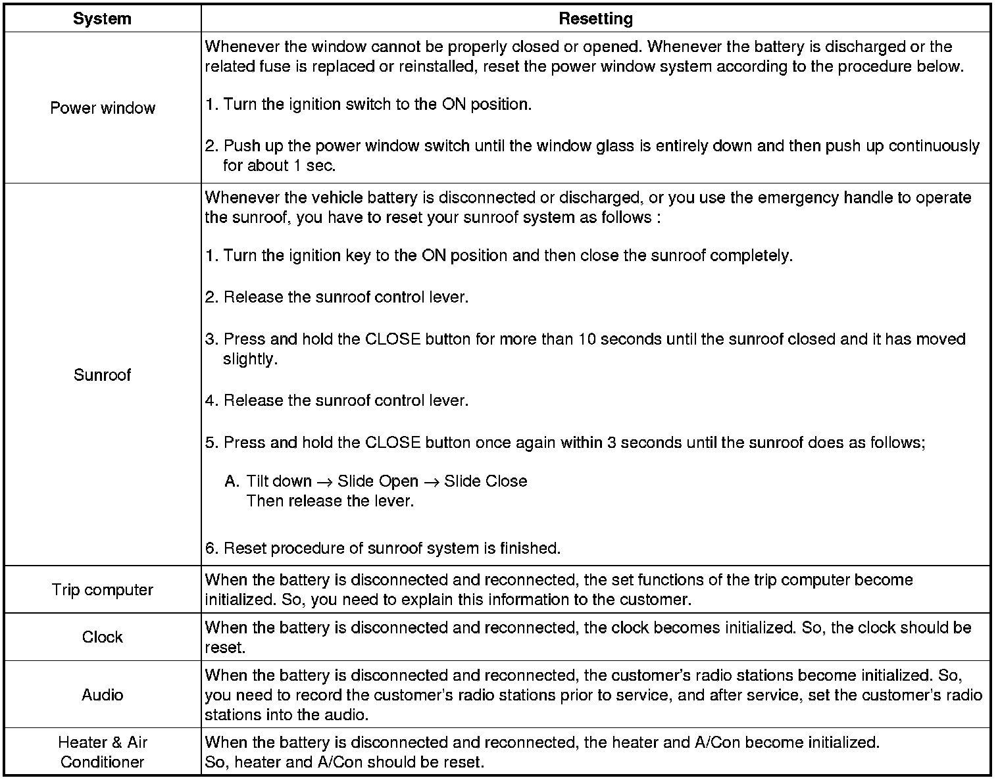